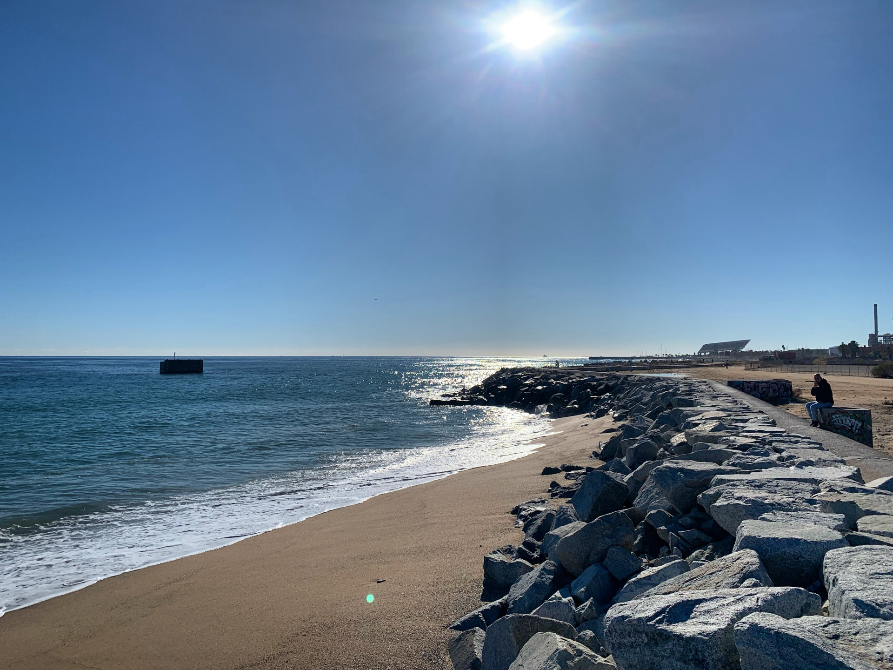
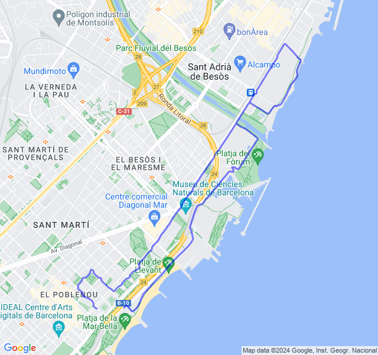
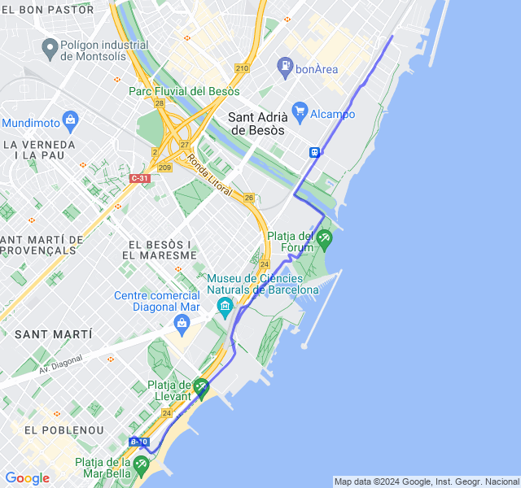
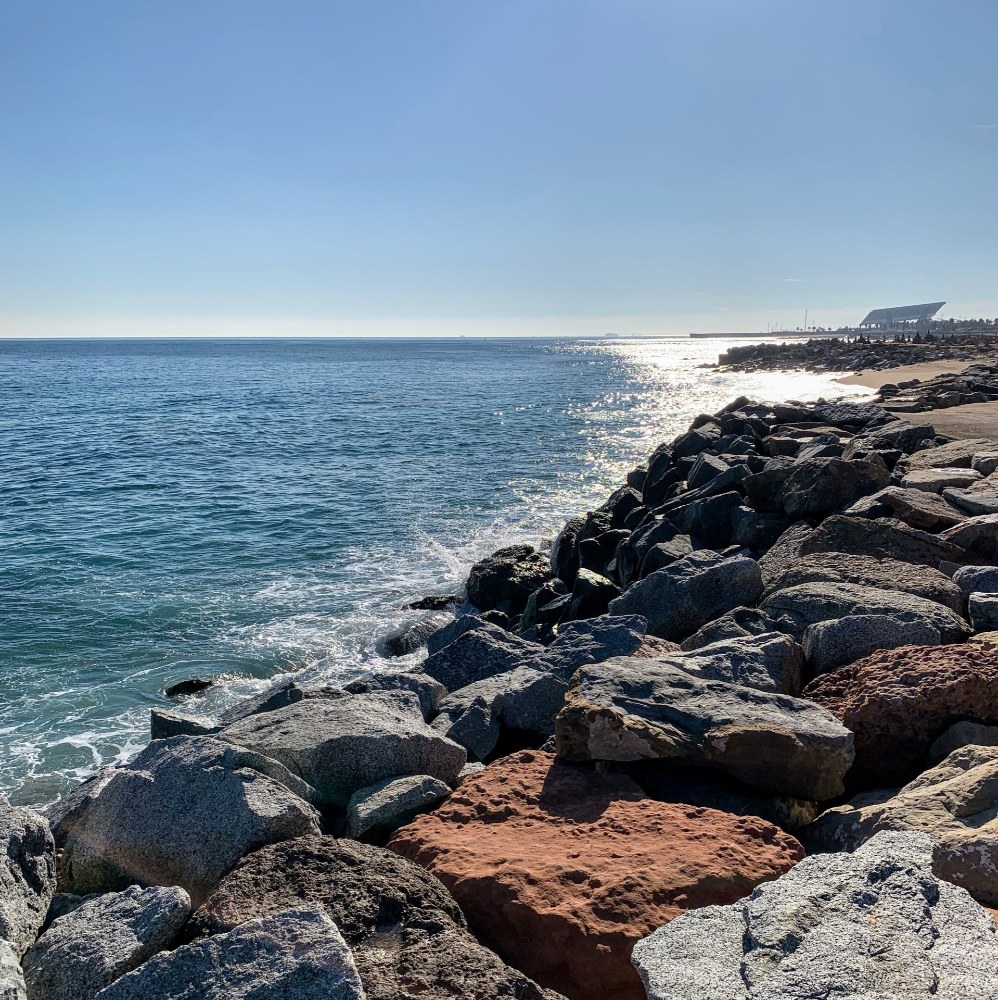
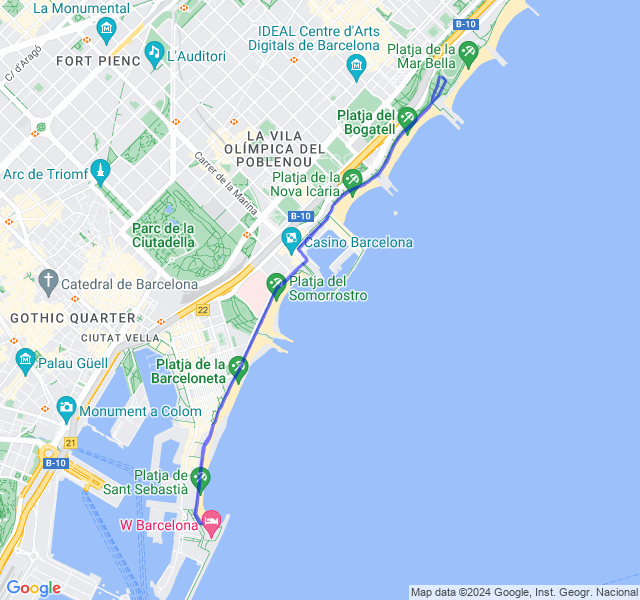
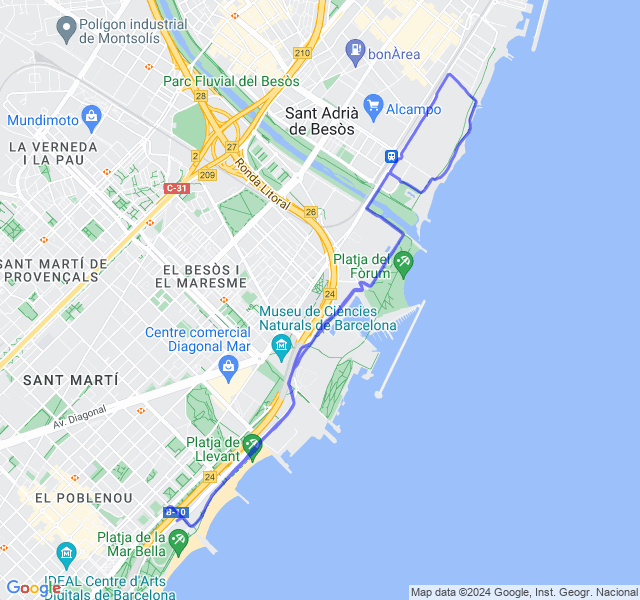
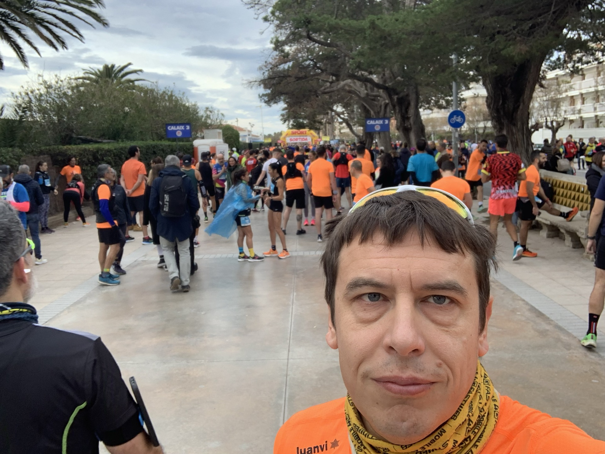
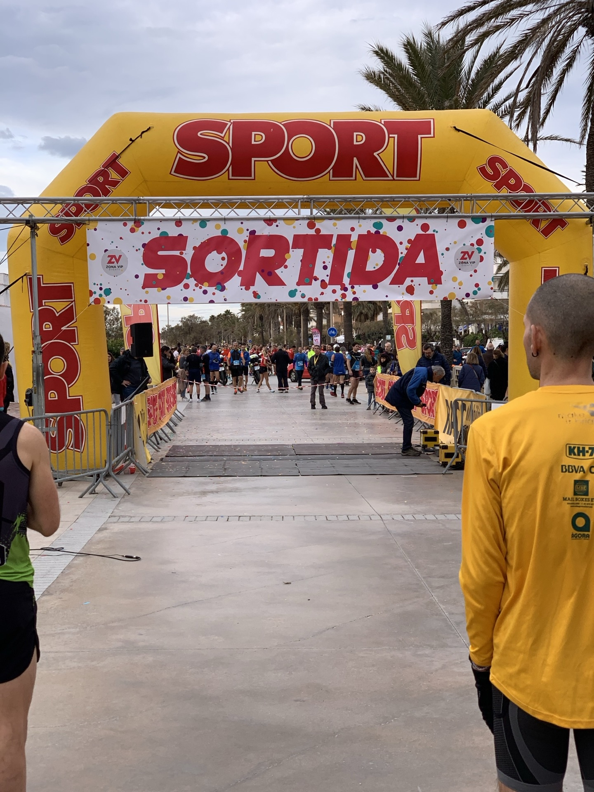
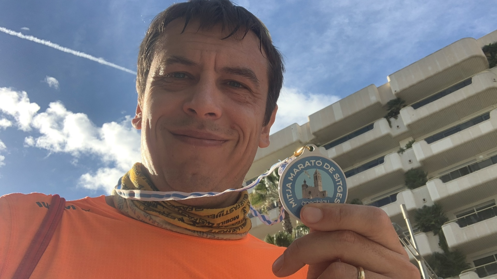
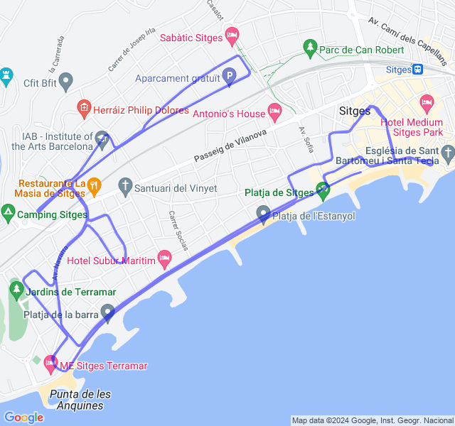

Settimana 2
Settimana di tapering e gara!
Prima uscita

10km Z2. Tutto tranquillo 🥳

Seconda uscita
12x(1' + 1') Z4.
Andato abbastanza bene ma ho spinto un po' troppo, soprattutto vista la mezza di domenica. Vabbè, speriamo di non aver esagerato!

Terza uscita
8km Z2. Tutto tranquillo. Prima uscita con le Novablast 4, devo dire che non mi dispiacciono.

Ora devo solo decidere se usarle domenica per la mezza oppure usare le "vecchie" GlideRide.

Quarta uscita
8km Z1 + allunghi. Anche oggi tutto tranquillo.
Fc un pochino alta, soprattutto all'inizio dell'allenamento.
E domenica, 🏁!

Quinta uscita
Mezza maratona di Sitges! Anche oggi sono stupito del risultato ottenuto: 1:26:59 (neanche a farlo apposta).

L’obiettivo era di provare a tenere il ritmo che suggeriva il VDOT per la mezza maratona (4:08) e alla fine, contro ogni mia aspettativa, ci sono riuscito facendo anche il mio PB.

La gara è andata bene con fatica sotto controllo fino agli ultimi 3 km dove ho accusato un po’ di più ma ho tenuto abbastanza bene.

Fino al 17 ho pure chiacchierato allegramente con un ragazzo conosciuto durante la gara.
